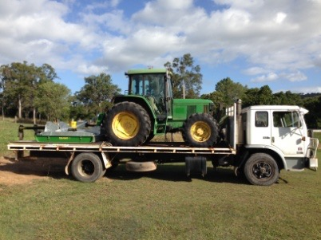
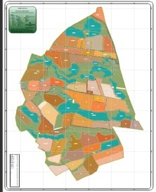
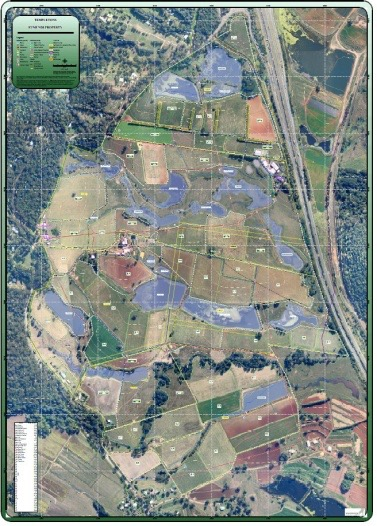
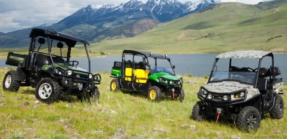

About Coast to Country Slashing & Mowing Services
Coast to Country Slashing & Mowing Services, CCSM has over 9 years experience in the tractor industry with a good working knowledge both mechanically and operationally. CCSM work closely with the client to ensure a high quality service is delivered whilst ensuring environmental and safety regulations are abided by.
CCSM are located in the Cooloola Region, servicing Cooloola, Gympie and the Sunshine Coast Hinterland.
Slashing and Mowing Services
 CCSM can provide slashing and mowing services to a range of clients including;
- Council Roadside Slashing;
- State Government Departments;
- Developments and subdivision estates;
- Large Rural Properties and smaller Lifestyle Properties;
CCSM have a large John Deere 6110 4WD Cab Tractor with Extreme Heavy Duty 7 foot Slasher so more ground can be covered in less time. The tractor is thoroughly washed between jobs to minimise the spread of weeds. CCSM also has a 7.3 metre flatbed truck with ramps to cart machinery around.
CCSM can also organize to provide other services at the same time including;
- Property Mapping;
- Spotter Checkers;
Property Mapping
CCSM associates are able to provide mapping that can be used for a wide range of property management and planning applications. Below are some of the applications and benefits from having a map and or data of your rural property.
- Display (Large A0/A1 laminated wall display map)
- Workplace Health and Safety (tear off pads for contractors to help direct them around the property)
- Assist in developing a Property Plan
- Marketing Purposes (real estate, investors etc)
- Vegetation Management
- Education and Training Purposes
- Plan and Prioritise Tasks and infrastructure developments such as the added ability to measure areas and distances for estimating costs to build new infrastructure such as fences or gates
- Record land use and management practices (e.g. crop rotations, nutrient applications, pasture treatments, paddock yields and monitoring programs)
- Demonstrate Duty of Care
- Support Applications for permits or funding
CCSM associates can capture existing assets such as gates, fences, dams, sheds, yards, bores, hydrants, pipes, power and other types of infrastructure from a combination of desktop analysis using existing aerial photography and field capture using a Differential GPS mounted on a 4WD John Deere Gator. Arcpad software with customized dropdown menus are used to enable quick and efficient data capture.
Project Management
Excellent communication with the client and those both directly and indirectly involved in the project is the key to a successful project and CCSM excels in this regard. Whether the project is large or small, on the coast or in the country, CCSM can successfully communicate with all involved and provide the style of management appropriate for the project. An essential component of project management is ensuring that the project meets assigned deadlines and comes in on budget.
For more information:
RE: Slashing and Mowing Services please contact:
Matthew Conaghan on 0498 399 333 or e-mail matto.72@hotmail.com
RE: Property Mapping and Asset Capture please contact:
Sally Chudleigh on 0407 941 755 or e-mail schudleigh@live.com.au